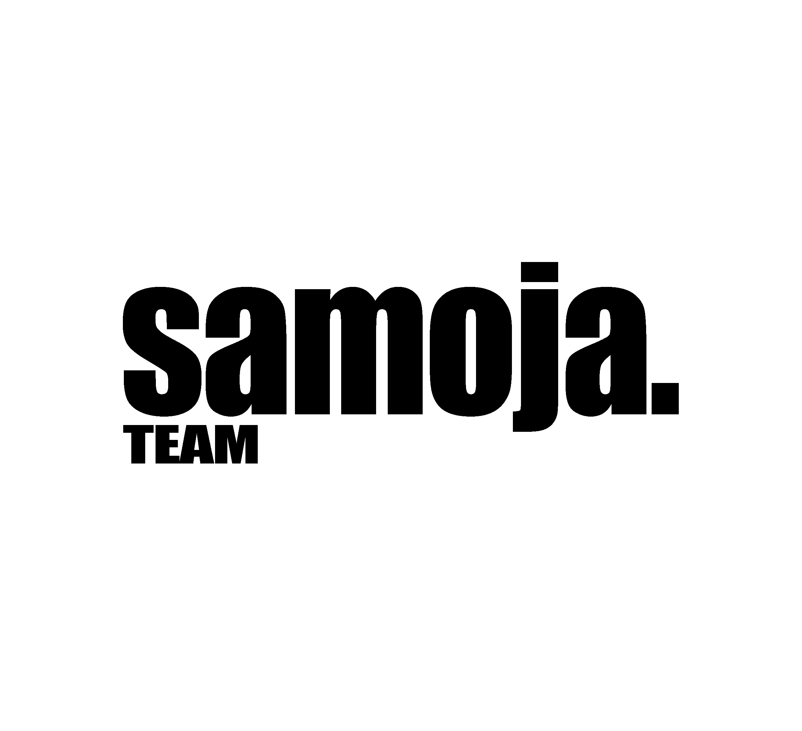

Cotton combed 30s, adem dan tidak mudah melar
Setiap koleksi dirancang unik, tidak pasaran
Layanan WhatsApp 24/7 untuk pesanan dan konsultasi
Produk cacat? Kami ganti 100% tanpa ribet
SAMOJA adalah local streetwear brand yang lahir pada 2025 dengan semangat memberikan pakaian berkualitas tinggi untuk keseharian. Kami percaya bahwa fashion bukan hanya tentang penampilan, tapi juga kenyamanan dan kepercayaan diri.
Setiap produk SAMOJA melalui proses desain yang teliti dan menggunakan bahan terbaik. Kami juga mendukung pengrajin lokal dan selalu berusaha mengurangi limbah produksi.
Lebih lanjut tentang kami →